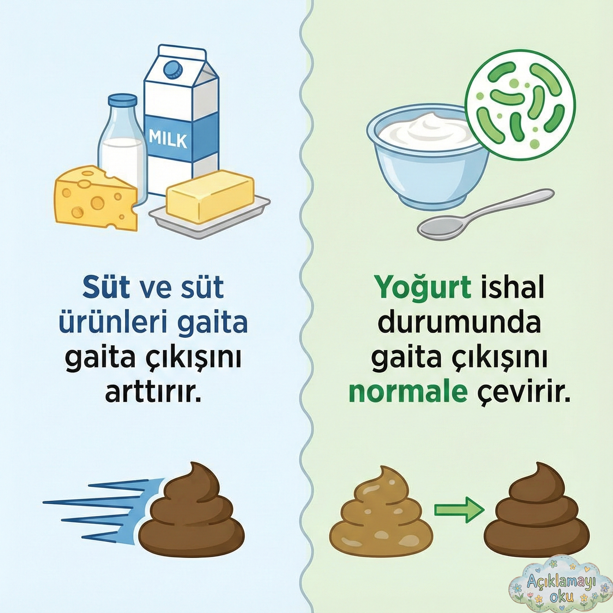
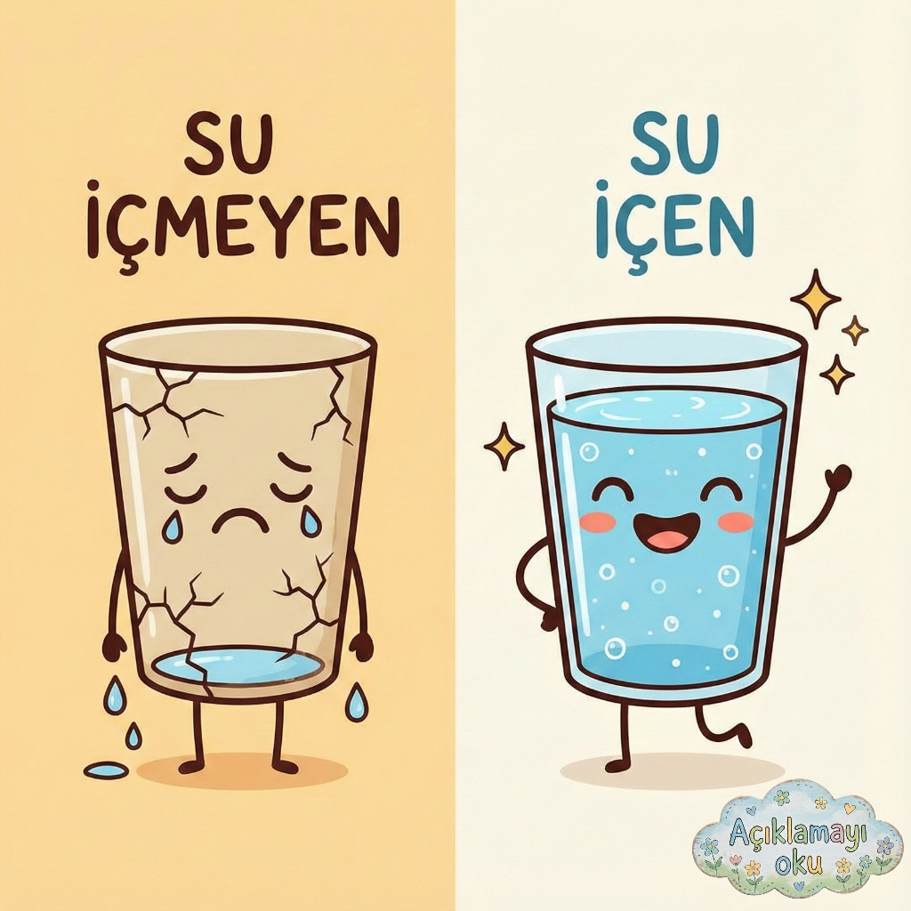
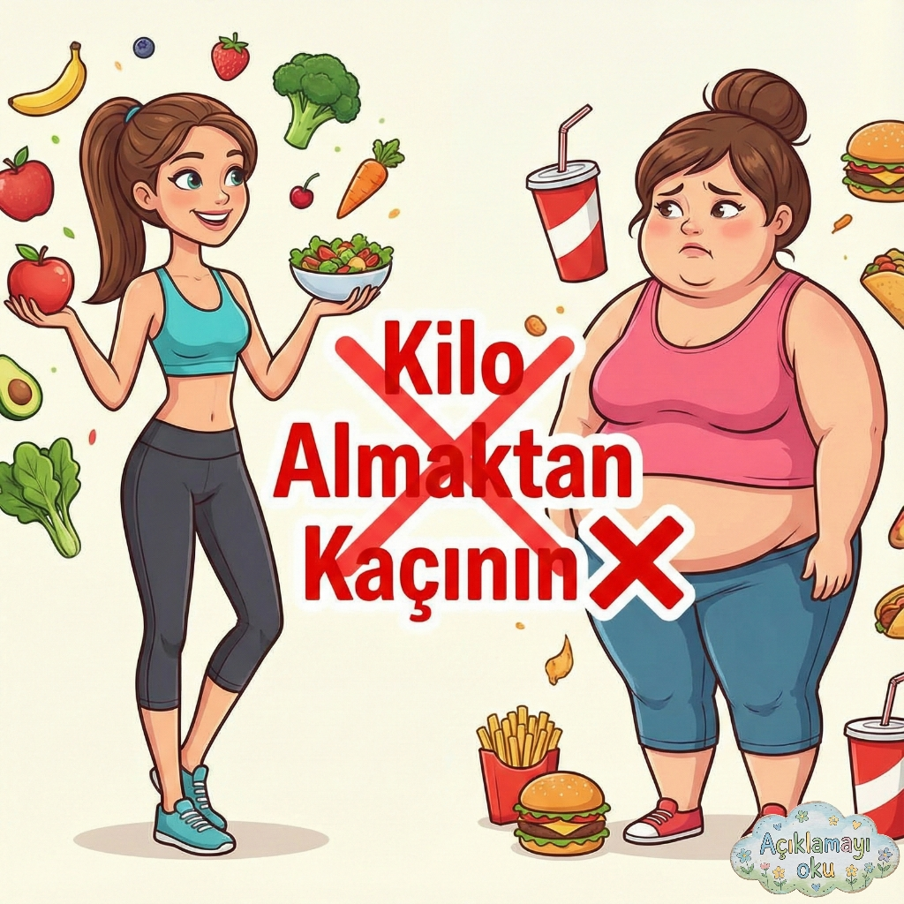
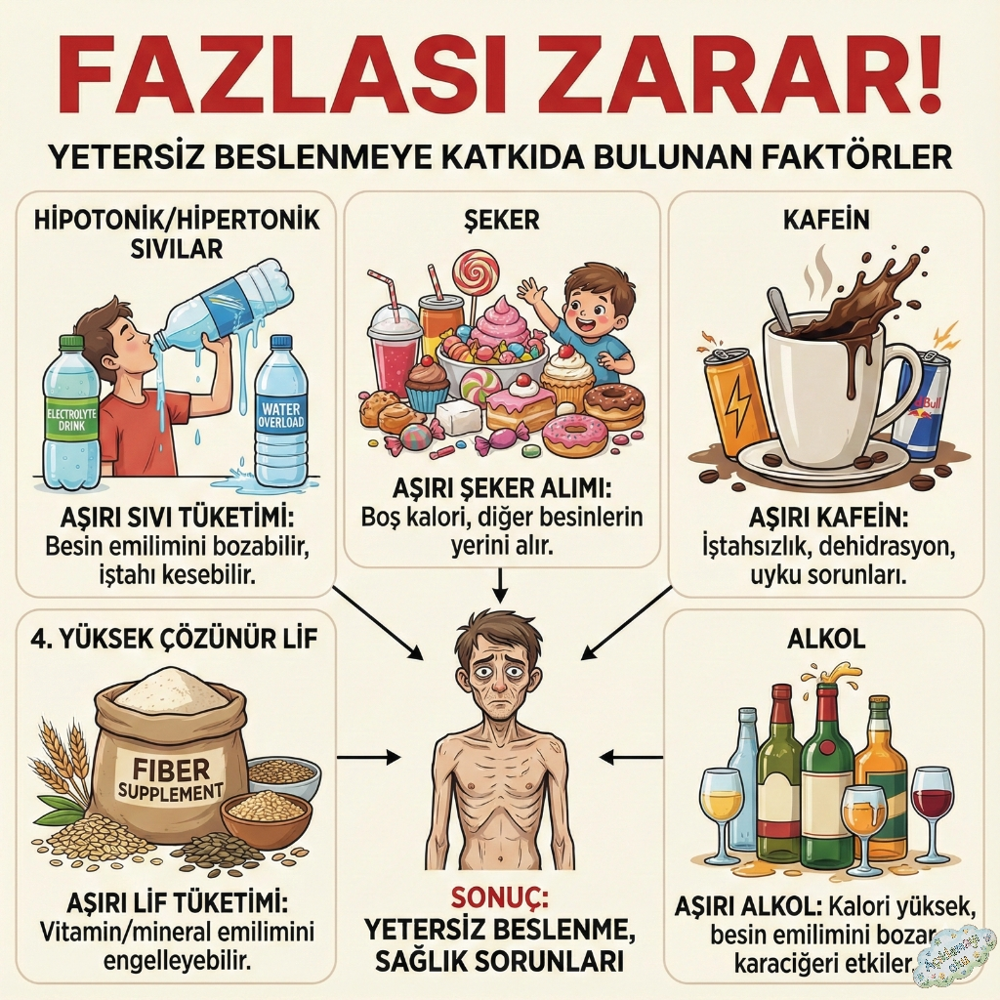
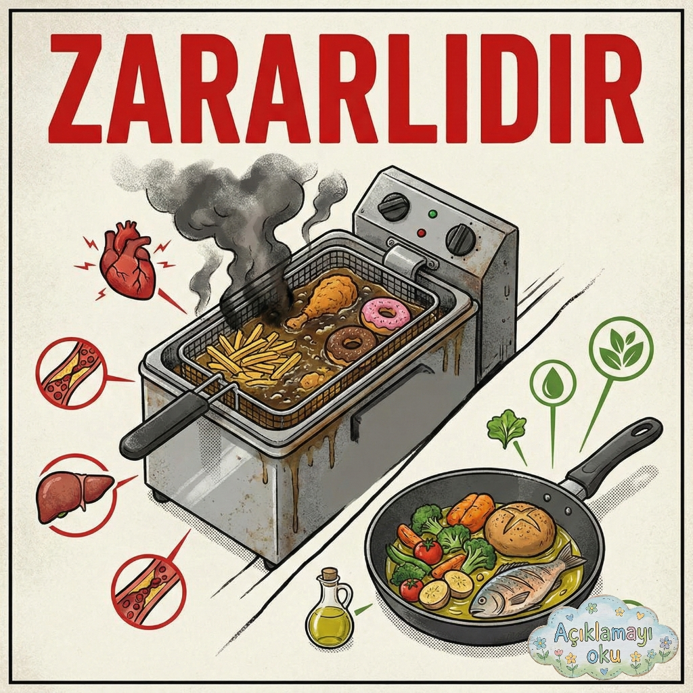

sude_nazSadece stomalı bireyler değil herkesin sağlıklı beslenmeye dikkat etmesi, öğünlerini planlaması ve sağlıksız besinlerden kaçınması gerekmektedir.
45 yorumun tümünü gör
burcin_hoca mükemmel olmuş 👏
2 saat önce
zeynep ✓
Eğitim İçeriği
⋮
1,134 beğenme
zeynepHer kişinin yiyeceklere karşı verdiği tepkiler ve toleransı farklıdır. Diyet insandan insana fizyolojik ihtiyaçlar-gereksinimler-karşılama gücü ve isteklere göre değişiklik göstermektedir. Gıdalar da ilaçlar gibidir. Size iyi gelen bana iyi gelmeyebilir!
77 yorumun tümünü gör
4 saat önce
irem_sude ✓
Eğitim İçeriği
⋮
3,789 beğenme
irem_sudeLifli gıdaların az tüketilmesi ishale, çok tüketilmesi tıkaca sebep olabilir. Stomalı bireyler öğünlerini kendi beslenme alışkanlıklarını keşfederek hazırlamalı ve bir profesyonel eşliğinde diyetini sürdürmelidir.
89 yorumun tümünü gör
45 dakika önce
nisanur ✓
Eğitim İçeriği
⋮
4,123 beğenme
nisanurStomalı bireylerde iyi çiğneme, gıdanın sindirime uygun kıvama getirilmesini sağlayarak stoma çıkışında tıkanma riskini azaltır. Yetersiz çiğnenmiş besinler özellikle lifli ve sert yapılı gıdalarda lümeni mekanik olarak tıkayıp karın ağrısı, bulantı ve distansiyona yol açabilir.
92 yorumun tümünü gör
30 dakika önce
sude ✓
Eğitim İçeriği
⋮
5,567 beğenme
sudeStomalı bireyler hangi besinin aşırı gaz, kabızlık, ishal ya da koku gibi yan etkilere neden olduğunu öğrenmeli. Besinler rahatsızlık veriyorlarsa 1 hafta tüketilmemeli ve sonra tekrar denenmeli.
134 yorumun tümünü gör
15 dakika önce
sude_naz ✓
Eğitim İçeriği
⋮
6,234 beğenme
sude_nazGaz yapan besinlerin tüketiminden sakınmaya ek olarak:
1- Yemek yerken konuşmama, ağız açık yemek yememe,
2- öğünleri yavaş ve küçük lokmalar halinde tüketme,
3- Az ve sık beslenme,
uygulamaları yapılabilir. Sağlıklı günler dileriz!
156 yorumun tümünü gör
burcin_hoca Aferin Zeynep 👏
10 dakika önce
zeynep ✓
Eğitim İçeriği
⋮
7,891 beğenme
zeynepEgzersiz (yürüyüş vb.) tıkaç oluşumuna iyi gelir. Böylelikle rahatsızlık hissetmezsiniz. Stomanıza uygun bir bakım yaparsanız egzersizi gönül rahatlığıyla yapabilirsiniz.
178 yorumun tümünü gör
5 dakika önce
irem_sude ✓
Eğitim İçeriği
⋮

8,345 beğenme
irem_sudeYiyecek toleransı kişiden kişiye değişebilmektedir. İnsanlar aynı besinlere, aynı tepkileri vermez: Hangi besinlerden kaçınmak gerektiğini stomalı bireyler kendi deneyimleriyle öğrenir.
bir çalışmada stomalı bir bireyin yoğurt için dedikleri dikkat çekmektedir:
"Yoğurt yiyin diyorlar ama beni rahatsız ediyor, yiyemiyorum. Herkeste aynı değil ki..."
201 yorumun tümünü gör
burcin_hoca çok iyi yapmışsın 👏
3 dakika önce
nisanur ✓
Eğitim İçeriği
⋮

9,456 beğenme
nisanurSağlıklı bir bağırsaktan günde 100 ml, intestinal stomalı bireylerde normalden 1-2L fazla sıvı kaybı olabilmektedir. Kısaca, bağırsaklardan normalden daha
fazla sıvı kaybedilir. Bu yüzden bol miktarda
sıvı almak önemlidir.
223 yorumun tümünü gör
burcin_hoca mükemmel olmuş 👏
2 dakika önce
sude ✓
Eğitim İçeriği
⋮

10,567 beğenme
sudeKilo alımı genellikle uygunsuz bir diyetin sonucu gerçekleşir. Stomalı bireyler Stoma sağlığı için kilolarına dikkat etmek durumundadır. Kilo alımı stomada bazı komplikasyonlara yol açabilir.
245 yorumun tümünü gör
1 dakika önce
sude_naz ✓
Eğitim İçeriği
⋮

11,234 beğenme
sude_nazHayırlı Cumalar 🥀🕊️
267 yorumun tümünü gör
Şimdi
zeynep ✓
Eğitim İçeriği
⋮

12,456 beğenme
zeynepYağlı besinler gerek içerdiği yüksek yağ ve trans yağ oranlarıyla gerekse kilo yapımı, kolesterol gibi etkilere neden olmaları dolayısıyla uzak durulması gereken besinler arasındadır.
289 yorumun tümünü gör
Şimdi
sude_naz
Sağlıklı beslenme herkes için önemlidir. #stoma #beslenme
🎵 Orijinal Ses - sude_naz
zeynep
Her kişinin toleransı farklıdır. #diyet #farkındalık